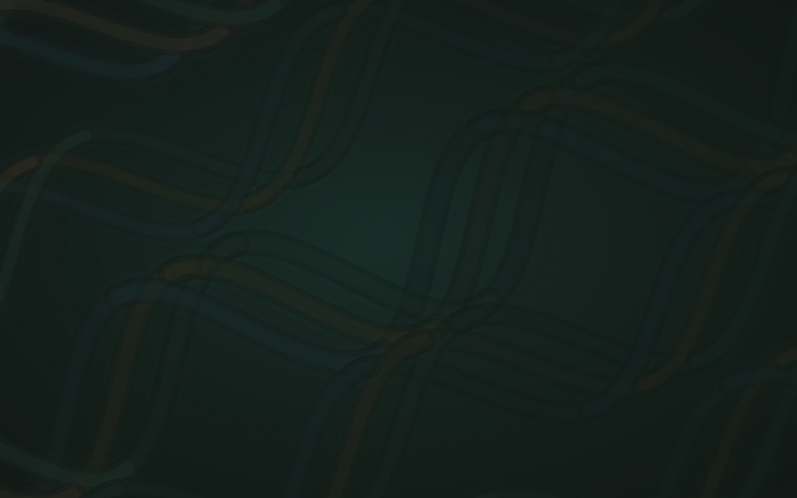
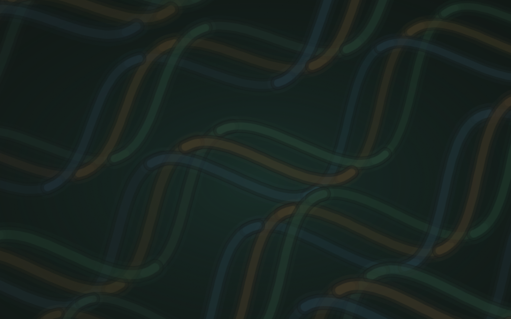
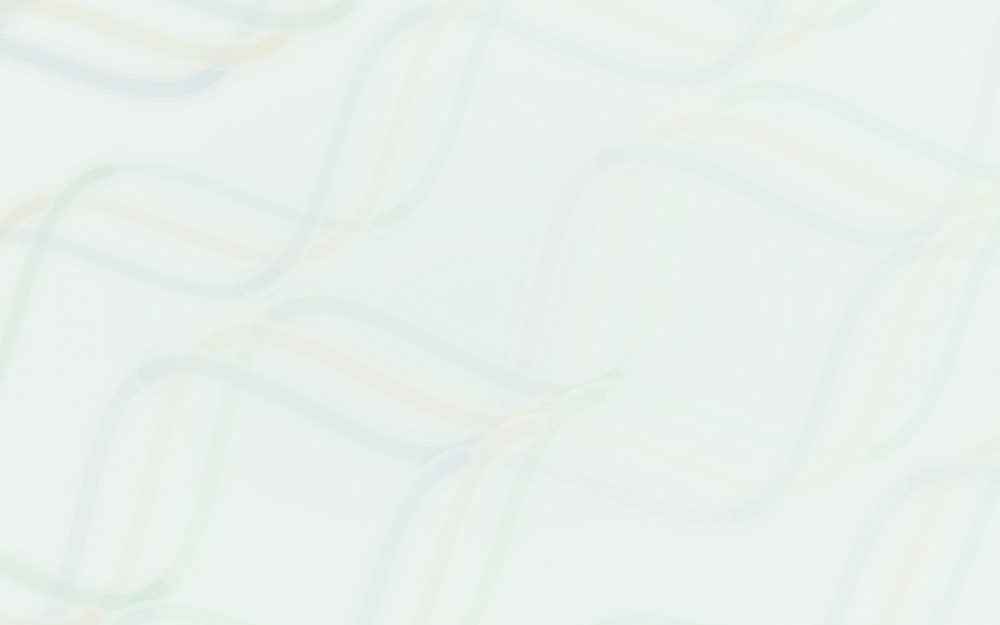
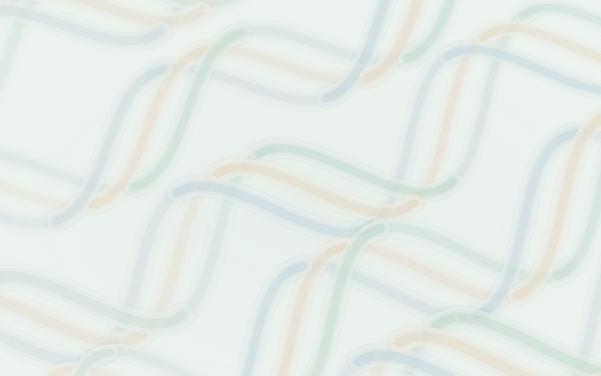

<!doctype html><meta charset="utf-8"><title>Pozadine — pregled</title>
<style>
body{margin:0;font:14px/1.5 system-ui;background:#181818;color:#eee}
figcaption{padding:6px 10px;font-size:12px;opacity:.65}
img{display:block;width:100%;height:auto}
.tekst{position:relative}
.preko{position:absolute;inset:0;display:flex;align-items:center;justify-content:center;flex-direction:column;gap:6px}
h2{margin:0;font-size:32px}
.svijetlo{color:#141413}
</style>
<figure style="margin:0 0 16px"><figcaption>tamna — stranica (tišina 0,2)</figcaption>
<div class="tekst ">
<div class="preko"><h2>Dnevnik</h2><p>1 842 kcal / 2 100 kcal · 4 obroka</p></div></div></figure>
<figure style="margin:0 0 16px"><figcaption>tamna — naslovna kartica (tišina 0,5)</figcaption>
<div class="tekst ">
<div class="preko"><h2>Dnevnik</h2><p>1 842 kcal / 2 100 kcal · 4 obroka</p></div></div></figure>
<figure style="margin:0 0 16px"><figcaption>svijetla — stranica (tišina 0,2)</figcaption>
<div class="tekst svijetlo">
<div class="preko"><h2>Dnevnik</h2><p>1 842 kcal / 2 100 kcal · 4 obroka</p></div></div></figure>
<figure style="margin:0 0 16px"><figcaption>svijetla — naslovna kartica (tišina 0,5)</figcaption>
<div class="tekst svijetlo">
<div class="preko"><h2>Dnevnik</h2><p>1 842 kcal / 2 100 kcal · 4 obroka</p></div></div></figure>
